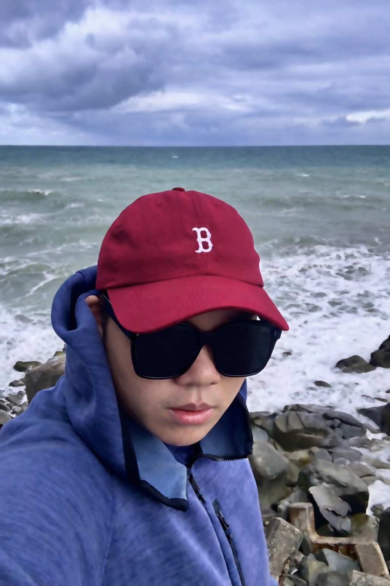
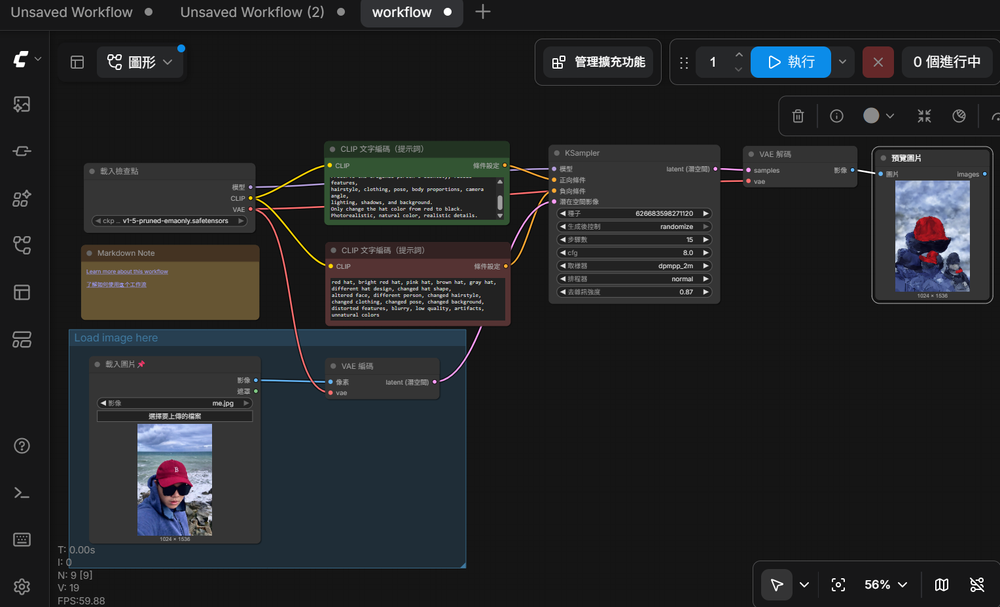

>
 >
>

正向提示詞:Change the red hat to solid black.
Keep the exact same hat design, shape, material,
texture, position, and size.
Preserve the original person's identity, facial features,
hairstyle, clothing, pose, body proportions, camera angle,
lighting, shadows, and background.
Only change the hat color from red to black.
Photorealistic, natural color, realistic details.
反向提示詞:red hat, bright red hat, pink hat, brown hat, gray hat,
different hat design, changed hat shape,
altered face, different person, changed hairstyle,
changed clothing, changed pose, changed background,
distorted features, blurry, low quality, artifacts,
unnatural colors
這次的生成圖讓我學到不是只有Gemini可以生成圖片,可以自己使用工具來製作和編輯出想像中的圖片,雖然結果完全不理想,根本看不懂它生成的東西,但相信只要多加訓練它就可以越變越強了。